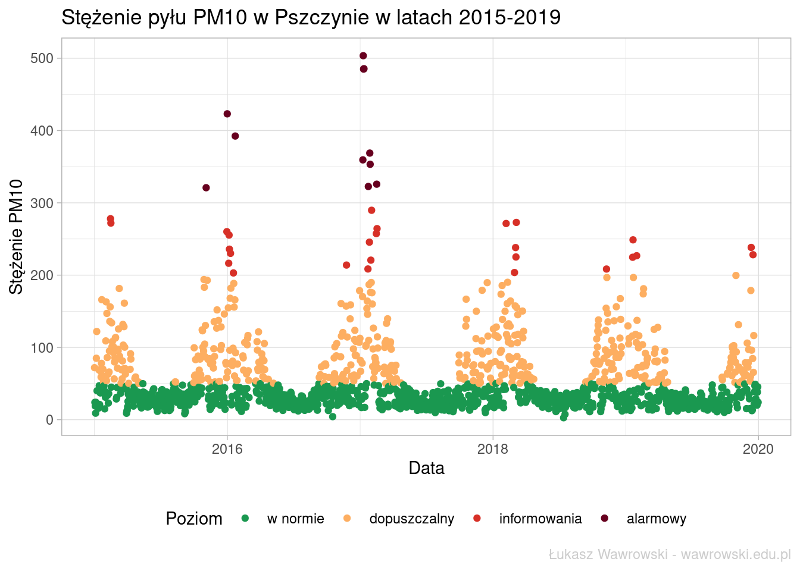
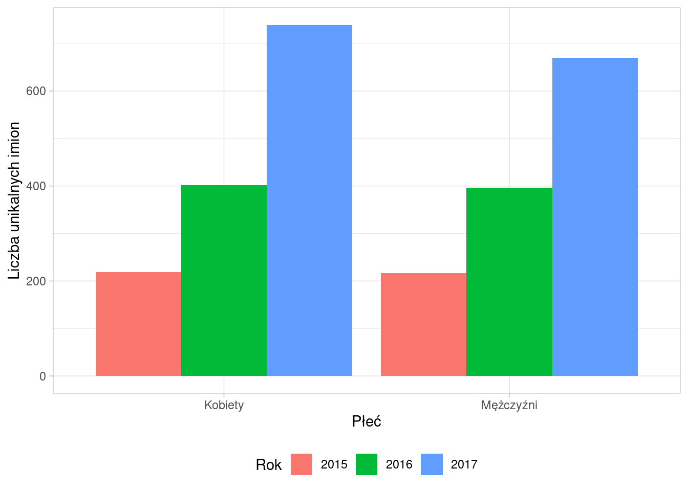

Analiza aktywności studentów na podstawie logów systemu moodle.
W poszukiwaniu związku pomiędzy stężeniem PM10 a wiatrem w Pszczynie.

W poszukiwaniu związku pomiędzy stężeniem PM10 a temperaturą powietrza w Pszczynie.
Sprawdźmy który dom Hogwartu jest najczęściej wymieniany w serii o Harrym Potterze.

Wykorzystanie miar podobieństwa tekstów na przykładzie polskich imion.
Zamiast wyklikiwania ankiet w Google Forms można wykorzystać JavaScript i zautomatyzować swoją pracę.
Ilościowa analiza imion papieży na podstawie danych z Wikipedii.
Jakie liczby wypadają w losowaniach Lotto najrzadziej, a jakie najczęściej? Analiza danych z 60 lat.